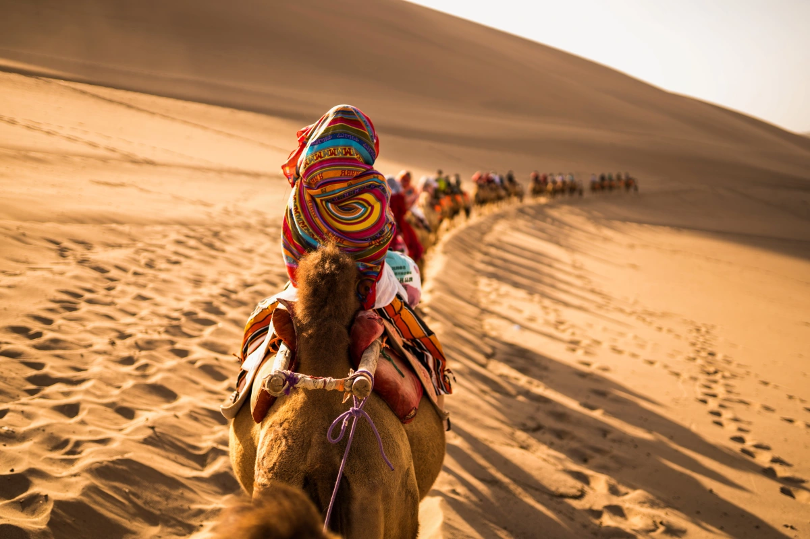

月牙泉
月牙泉泉形酷似一弯新月，水质甘冽，清澈如镜。因“泉映月而无尘”、“亘古沙不填泉，泉不涸竭”而成为奇观。有“沙漠第一泉”之称，自汉朝起即为“敦煌八景”之一。
Read More
丝绸之路
‘风吹沙山声声鸣，如歌如泣诉衷情” 沙山因其沙粒在风吹拂下会发出声响而得名，一座沙山与敦煌绿洲相伴相生，见证了古丝绸之路的繁华。
Read More

夫妻柳
夫妻柳裁植于1971年，是同根系长出的两株相互依偎的旱柳，被称为“夫妻柳”。它们在鸣沙山月牙泉陪伴下共度无数寒暑岁月，成为游人驻足留恋的大漠一景。这也铸就了关于鸣沙山大多数神话传说。
Read More